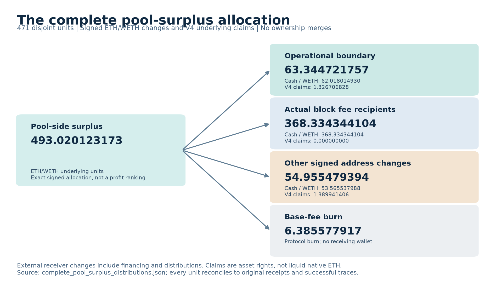
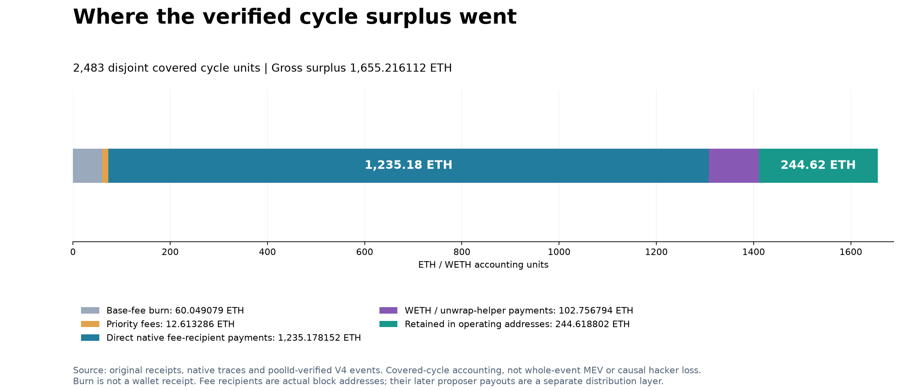
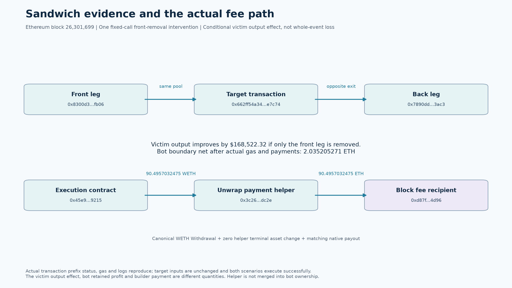
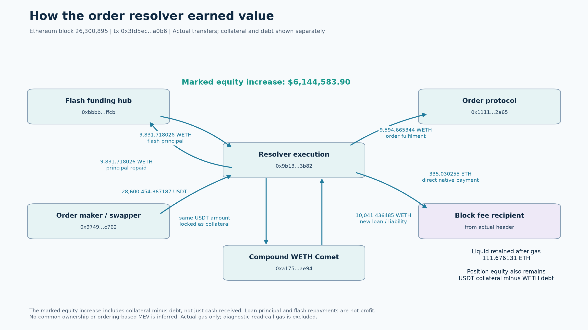
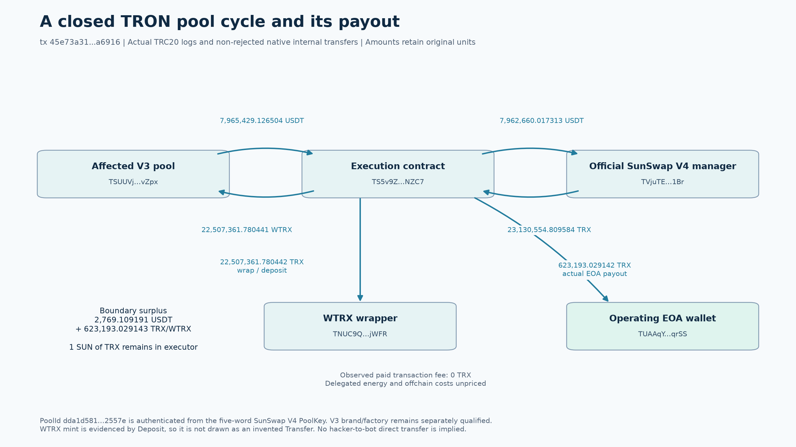

更新：2026-11-19T00:32:59.091738-05:00（纽约时间）。本报告为当前研究入口；八张基础图保留各自样本定义，新计算、真实收支和审阅中的演示副本见下列入口。历史源记录保留明确标注的 UTC，实际收支 CSV 同时给出纽约时间。
我们已经算出具体套利收益和收款路径，并把“赚钱”与“是 MEV”分开验证。以太坊完整窗口读取 3,311 块、751,258 张回执，得到 12,841 笔相邻同池候选；合并负收益腿和区间内费用后形成 12,249 个交易不重复的操作单元。另有 160 个受影响池的完整窗口活动账，防止只看前后五块。
其中 2,483 个 ETH/WETH 正收益闭合单元，实际操作边界合计净留存 244.618801771 ETH。扩大到多利润资产后，有 2,685 个通过资金与池账衔接的闭合单元；2,678 个可完整估值，参考净额为 $572,914.45，其中 34 个扣费用后非正，缺价的 7 个没有填零。前一数字是后一样本的子集，不能相加。
订单填充又是一种机制。9 笔已识别订单的操作边界参考权益增量合计 $6,479,475.32；最大单笔为 $6,144,583.90，包含仍锁在 Compound 的抵押资产减去 WETH 借款，不能只看钱包收到的现金。该笔订单的 $6,965,991.92 参考成交差额已经精确分到填充者权益、区块收款、第三方结算收款及 Gas 四项。
MEV 不能用“Gas 高”直接判定。闭合跨池循环证明套利机制；前—目标—后及方向支持夹子结构；指定前腿删除实验才检验其条件目标影响。新完成 372 组实验，并按 319 个区块联合删除相关前腿、逐目标去重；实际前缀均先核对 status/gas/logs。它们检验指定固定调用的影响，不等于全事件重新竞价和改路由后的均衡损失。
Bitquery 的部分重要数字能独立得到接近结果，但不构成全文复现。例如以太坊首位库存卖家约 $3.467M、最大填充者约 $6.145M，以及三个 TRON 点名地址约 $1.122M、$0.969M、$0.751M 的参考交易差额。其余地址、交易口径和借贷仓位仍有差异，下面逐项展开。
可以直接在 Etherscan 对照收到多少、转出多少。 新的真实收支核对入口提供可点击交易、收款地址、原币数量及证据指针；批量金额来自归档回执与完整成功调用树。Etherscan 页面抓取遇到访问限制，不声称已经逐页独立看过 34,397 个网页。浏览器页面是人工复核入口，底层链上回执／trace 是批量可复算依据。
当前导出 34,397 笔唯一交易、397,776 条实际转账／费用／凭证记录、500,996 条逐交易逐地址资产收支。每行有原始 raw 数量、小数位（有依据时）、合约地址、交易哈希、log index 或 trace path，区分 ETH、ERC20、WETH 包装变化、ERC-6909 凭证及 NFT。相同资金在多个地址周转的收款总额不是利润。下载完整转账 CSV、逐地址收支 CSV。
A1 交易 0x722001ce0a09024d683592474d12df947aa9548befb0292ae098a9db37a0aa7c 的池侧毛剩余为 12.137824203978034597 ETH，给实际区块收款地址 8.252947611878097532 ETH，Gas 1.1390642976 ETH，操作边界实际净留存 2.745812294499937065 ETH。池内本金和中间币种闭合，池费已包含在成交中，不再重复扣除。这个净额才是此边界的套利收益；不能把收到的全部本金或 hacker 的参考成交差额当作收益。
扩大协议认证后，需要完整分配账的单元由原 452 个增为 471 个，471 个全部对平。原算法漏掉的混合交易 helper 付款、manager 原币清算和 ERC-6909 凭证负债均已进入账。拆出 1322 条地址记录，107 个单元有 V4 凭证。负融资及费用保持负号，收款人不被自动并入 bot 所有权。
例如区块 26,301,634 的 helper 0x5aae4d2f360e156de3416936049837a7bb685588 实际向本块 fee recipient 支付 47.500710754933580679 ETH。它同时参与交易，旧的“只解包、不交易”费用识别器漏掉了该付款。现在直接按成功调用树计入实际收款。另一笔 0x806f60…b30ce向 0x82ccba35ad0c7a62230ef8ff337ac67f4cce0ea5 铸出 0.064521435779627872 ETH 的 V4 凭证；它是可核实的资产权利，不能写成已经到账的原生 ETH。

372 组前腿删除实验全部完成；进一步在 319 个区块内联合删除相关前腿，372 个目标交易只出现一次。实际前缀逐笔 status/gas/logs 均复现。12 个目标在删除后回滚，4 个成功目标发生投入变化，均没有计作“同输入收款改善”；356 个满足成功且投入不变，其中 354 个改善量有价格。
这些可估值输出改善量之和为 $4,344,079.48，定义严格限定为“每个区块独立从历史父状态开始，固定其余调用、联合删除指定前腿”的敏感度汇总。不同区块之间没有传递反事实状态，不能写成全事件 no-MEV 损失，也不是 bot 净利润。完整联合干预数据。
旧批量实验的 6 个失败已重新请求并定位：删除目标后，后续调用资金不足，属于干预情景不可执行，而不是应填成 0 的收益。错误原文、所需金额和现有金额均归档；未通过伪造余额使实验通过。六项失败诊断。
全窗口 2,939/2,939 个保留的 relay 交付金额与链上 proposer 实际收款相等；关联 11,396 个操作单元、1,264 个区块。另逐块列 fee recipient 原生流入、流出、priority、自己支付的 Gas 和原生余额变化代理。Searcher→builder→proposer 是同一价值的后续分配，不能相加成新损失。全窗口拍卖与实际付款。
200 个仓位／债务／NFT 单元另列现金、本金、债务及流动性变化，解码 1,025 个事件、167 条借贷／抵押本金账及 158 条流动性仓位账。借入是负债，Withdraw／Redeem 是释放旧本金，Mint／Burn 的流动性数量不是利润。跨交易开放库存保留完整窗口的收支，未将当前卖出收入伪装成历史成本利润。本金与仓位明细。
普通池 1097/1097 已取得历史资产身份依据，其中 1096 个历史 factory 目录匹配，余下一个通过历史 EIP-1967 implementation 和 underlyingTokens() 核实为 Ammalgam 的 USDC/WETH 借贷池；它的借贷风险单独标出。Algebra 自定义池查询完整 allPairs 目录；动态费率池用 tick spacing，未再套用错误的固定 fee 身份参数。
补充确切合约的历史二级报价和已认证币种的 Binance spot 后，2,678/2,685 个资金闭合单元可完整估值，参考净额 $572,914.45，保留 34 个扣费后非正单元。其余单元的资产合约和 raw 数量仍全部可查，缺少的是可靠美元标价，并非转账未找到。
四种 Few 包装资产已核对历史 token()、小数位、准备金及 14 次实际 Wrap/Unwrap，每次同时匹配原币转账和包装币 mint/burn，数量均为 1:1。然而核实源码还允许授权 minter 不交原币直接 mint，24 个快照的直接准备金也低于 totalSupply。实证支持已发生兑换的数量，不能据此宣称全部发行量始终按原币价格兑现。九笔订单中六笔的这些储备数量因此保留原币单位，独立于已经精确算出的 maker 交付和 filler 权益。历史兑换与准备金。
稳定币改按 $1，同时分别使用前分钟和同分钟 Coinbase，再用实际取回的 Hyperliquid 15 分钟高低价给出条件范围。目标日期的 Hyperliquid 1 分钟请求返回空数组；官方接口只保留最近 5,000 根对应周期 K 线，因此没有冒充取回精确分钟数据。下面是各地址参与的全部 ETH/USDT、USDC 卖出池腿价差，未扣重复路径和整笔成本，不称为实际最终利润。
| 地址 | 卖出腿价差：同分钟 Coinbase、稳定币 $1 | 唯一交易数 |
|---|---|---|
0x0cdd9cbb825212c6cc5b0b36239e94218ee661d8 |
$3,368,315.72 | 36 |
0xcb02ecb8927434540352e1da27f91c3a194f1d1d |
$1,348,500.40 | 1 |
0x65a8f07bd9a8598e1b5b6c0a88f4779dbc077675 |
$884,874.26 | 55 |
0xcaab6ff98989fdd4f47e7db6152e6fb47994ec1e |
$675,739.68 | 8 |
0xb7c854ed55a7bf36de3217aff276a54d6812dd20 |
$763,366.10 | 24 |
0xa127edc40fea07cdff89f8d812931f612ec13fa6 |
$730,315.10 | 1 |
0x09df642e9001c2020bac1c9f5e0b15ff44b8e86b |
$642,745.02 | 7 |
0x58a497019644d8c383c8d3764c32ffd43506e836 |
$1,265,372.53 | 79 |
例如 0xa127…3fa6 的卖出腿约 $0.73M，接近来源约 $0.72M，但其原 gas 地址＋入口边界不留这些资产。完整真实收支表另外列出实际原币提供者、收款人和协议仓位，不能把中间卖出腿全写成该 EOA 的净所得。0x58a4…e836 的同口径卖出腿约 $1.265M，整笔操作参考净额约 $0.581M，差异体现成本及路径范围。比较结果支持部分价差数量级，未证明 Bitquery 所有行的交易筛选或整篇全链总数。逐池比较及行情范围。
| 标签 | 本报告采用的证据 | 金额怎么报 |
|---|---|---|
| 跨池套利机制 | 成功交易；至少两个不同池／PoolId；实际投入产出；投入本金及中间库存闭合；池剩余与操作账户衔接 | 合并所有腿后，扣实际 Gas、直接付款及核实的中转付款。单独盈利不证明依赖排序 |
| Backrun 特征 | 目标之后、同池、反向；另列是否同区块及是否闭合套利 | 先列“关联”，不把全部收益都归因于目标 |
| Sandwich 结构 | 同一明确操作边界的前腿—目标—后腿；前腿同向、后腿反向；完整计入负腿、库存与费用 | 夹子整体净额；后腿收款不是利润 |
| 有执行干预支持的目标影响 | 原始前置状态、原区块环境、固定其余调用；实际前缀 status/gas/logs 先逐笔复现；两情景目标均成功且投入不变 | 删除指定前腿后的目标输出改善；不外推为均衡损失，不把重叠实验相加 |
| 库存型承接／卖出 | 卖已有 ETH/TRX 或承接代币，头寸不闭合 | 相同时间参考价下的交易差额；不是历史成本利润，场外对冲未知 |
| 订单填充／solver | 实际订单事件、maker/filler、资金交付和借贷来源相符 | 液态资产变化加抵押变化减债务变化；不默认属于抢跑／夹子 |
| 排序竞争付款 | 实际 priority fee、区块 fee recipient、直接或可认证中转付款 | 是付款证据；不能单独证明抢跑或私有 mempool 到达时间 |
| 仅关联／未闭合 | 同池、时间接近、利润单腿、未知协议、开放库存或未解释对外付款 | 候选与缺口；不能称已确认 MEV 净利润 |
Gas 拆为 gasUsed × baseFeePerGas 的燃烧额及剩余 priority fee，二者合计才是总 Gas。直接 native 转账和 WETH 解包付款另外列一次。builder 后续付 proposer 是二次分配，不能再次从同一笔套利收益扣除。“提高 Gas”还需要同块优先费分布等对照；all_sender_accounting.jsonl 已保存同块中位数、分位位置和实际 fee recipient。详细标准见 MEV 判定说明。
| 数据层 | 本轮实际完成 | 限制 |
|---|---|---|
| Ethereum 原窗口 | 区块 26,300,640–26,303,950；751,258 回执；区块原始数据读取失败 0 | 事件窗口约 2026-10-29 20:24 至 10-30 07:02；不是全历史／全部链 |
| 目标地址 | 原 16 条地址线索 + 实际收到 500M USDT 的订单 swapper 分支；818 个目标，其中 9 个订单、3 个无池事件 | 资金关联不等于共同控制；线索身份与链别保留原置信状态 |
| 相邻候选 | 前后五块双向同池候选 12,841 笔，覆盖 V2/V3、Pancake 特殊 ABI、V4 PoolId | 接近目标不是 MEV 判据 |
| 全窗口成本腿 | 3,225 个候选 sender 的 137,013 笔交易；其中 124,172 笔不是直接候选 | 不能把窗口外建仓／场外对冲补成零 |
| 去掉相邻块限制 | 160 个受影响 PoolId／池，71,434 笔交易；含 6,187 笔目标之前的对照、815 笔目标、64,432 笔目标之后活动 | 64,432 笔都是活动关联，不都是套利；原始全集在 affected_pool_scope.jsonl |
| 资金边界 | 12,249 个互不重复单元，实际包含 12,967 笔交易；含 126 笔补入的区间成本腿 | 共享协议／router 不归并进 bot；私有操作边界也不等于实际控制人证明 |
| TRON | 4 个 Bitquery 点名地址、3,541 笔窗口内发出交易，完整分页且无回执抓取失败；全部 txID 与签名主体核对 | 这 4 个地址不是全部 TRON 套利者；节点保存的 internal transactions、能量租赁和场外费用有边界 |
Ethereum 共 1097 个普通池 metadata：1096 个历史 factory 反查一致；Uniswap V2 272、V3 524、SushiSwap V2 70、PancakeSwap V2 4、V3 26，201 个保持未命名。V4 的 808 个 PoolId 均由实际调用 calldata 的五字 PoolKey 哈希验证；同一个 manager 下的不同 PoolId 不合并成同一池。带非零 hook 等复杂结算不自动纳入利润。Sushi/Pancake 品牌来自固定 SDK 版本，归档 tarball 已校验发布 integrity，再与链上 factory 反查结合。
TRON 的 143 个普通池均完成当前状态 factory 反查，其中 SunSwap V1 19、V2 54、V3 16、其余 54 未命名；另有 3 个 SunSwap V4 PoolKey 哈希核实。这里有意没有称作历史状态认证：TRON 官方 eth_call 说明指出，它的状态执行针对 latest，不能凭传入历史块号得到过去状态。本报告只用历史回执的实际数量，当前 metadata 作为身份交叉支持，不冒充历史储备。

以下是 2,483 个 ETH/WETH 正净额、交易不重叠、账户与池账完全衔接的单元。金额单位为 ETH/WETH；已含在兑换结果中的池费不再重复扣除。
| 去向 | 金额 ETH |
|---|---|
| 池侧毛剩余 | 1,655.216112489304 |
| Base fee 燃烧 | 60.049078726262 |
| Priority fee 到实际区块收款地址 | 12.613286425646 |
| 直接 native 支付到区块收款地址 | 1,235.178151628569 |
| WETH 直接付款／严格认证解包中转付款 | 102.756793938242 |
| 操作地址边界净留存 | 244.618801770585 |
毛剩余精确等于以上五个去向之和。燃烧没有接收钱包。15 个实际 fee-recipient 地址及 628 个 sender 的逐项账见 收益与费用去向。交互分配图 可单独打开。
对外部 WETH 付款，只有在同笔交易中“收到来自边界的 WETH→匹配 Withdrawal→helper 无终值资产变化→同额 ETH 到实际区块 fee recipient”全部成立，才认作已核实费用。中转 helper 不并入 bot 所有权。其余外部收款保留性质未知。
另有 471 个池已闭合、但旧边界分配算法存在差额的单元，现已全部对平，未解释分配差额为 0。实际拆出 1322 条带符号地址记录，其中 107 个单元涉及 V4 ERC-6909 凭证。修正的是混合交易 helper 付款和 manager 的原币／凭证负债，未将外部收款地址归并成 bot 所有权。完整池收益逐地址分配。
净留存进一步按真实地址分开：2,685 个多资产闭合单元产生 4,733 条地址净变化，逐个与联合边界精确核对。发送者可能只支付 Gas，资产留在 executor。逐地址净变化 CSV列出 native、WETH、Gas、其他代币、单元和交易哈希；这是区间净变化，不是最终账户余额或控制人标签。
交易 0x722001ce0a09024d683592474d12df947aa9548befb0292ae098a9db37a0aa7c，sender 0xc77a078a0e45bb30912c1e3bb0c20571e6728dfa，executor 0xb7c2f4c212e83c9503beb0cbe53013bfbdb51f2e。按日志顺序可识别 6 条连续闭合代币路径；不是“14 轮”。回调可能让日志顺序不同于调用发起顺序，不能把所有分支强行串成单线。
| 轮 | swap 编号 | 代币路径 | DEX 顺序 | 该路径 WETH 剩余 |
|---|---|---|---|---|
| 1 | 1–4 | UNI → USDT → USDC → WETH → UNI | Uniswap V3 → Uniswap V3 → Uniswap V3 → Uniswap V3 | 0.681206545302 |
| 2 | 5–7 | UNI → USDT → WETH → UNI | Uniswap V3 → Uniswap V3 → Uniswap V3 | 0.048648398621 |
| 3 | 8–11 | 0x68749665ff8d2d112fa859aa293f07a622782f38 → PAXG → USDC → WETH → 0x68749665ff8d2d112fa859aa293f07a622782f38 | Uniswap V3 → Uniswap V3 → Uniswap V3 → Uniswap V3 | 0.094791206530 |
| 4 | 12–14 | WBTC → USDC → WETH → WBTC | Uniswap V3 → Uniswap V3 → Uniswap V3 | 0.296778960372 |
| 5 | 15–18 | USDC → USDT → ETHFI → WETH → USDC | Uniswap V3 → Uniswap V3 → Uniswap V3 → SushiSwap V2 | 0.049519854772 |
| 6 | 19–21 | USDT → 0x68749665ff8d2d112fa859aa293f07a622782f38 → WETH → USDT | Uniswap V3 → Uniswap V3 → Uniswap V3 | 10.966879238381 |
六条路径的 WETH 剩余合计 12.137824203978034597 ETH；扣 Gas 1.1390642976 ETH、直接区块付款 8.252947611878097532 ETH，净留 2.745812294499937065 ETH。它证明实际多池套利；是否每一部分价差都由 hacker 创造，还须另做目标删除实验。完整案例路径。
S1 的后腿约收到 567.68 ETH，但合并前腿投入及费用后，整组净额是 12.080033775421395622 ETH。另一组区块 26,302,760 的正腿约 1,304 ETH，同 sender 两腿合并只约 0.569 ETH，且仍有库存残差，不能写成净赚 1,304 ETH。扩大样本仍保留负腿、失败尝试和不闭合单元，而非只挑盈利腿。

区块 26,301,699：前腿 0x8300d3042e9e7d745367530c262370b9903a54866790711a47971b0fb7f1fb06，后腿 0x7890dd1fecb9bdcbd805158c09919d7af515ae5fd2a0a13359812c27d04b3ac3。操作边界为 sender 0x4d92a9835f4768aac92531cf1a638e444912dada 与 executor 0x45e9b04942176a513b22acc1ced75c34d2fd9215，合并两腿实际净留 2.035205271234080791 ETH。
90.495703247500838131 WETH 从 executor 到 0x3c26a02d1ccccb9079062ad07d0240cb975bdc2e，在同笔解包并同额转至区块收款地址 0xd87f3d6c5624e8b02be13c2c92f8511b88b94d96。删除前腿、其他调用固定后，目标输出改善 $168,522.32。bot 留存、区块付款和目标条件损失是三个不同数，不能互相代替。
22 个新鲜执行干预如下。每行已经验证实际前缀；目标两次都成功，投入不变。USD 是收款差异按指定参考价估值，不是最优改路由／重新竞价后的损失。同一目标或其他调用可能被多个干预覆盖，因此表内不求“全事件损失总和”。操作边界未必覆盖最终收益分配，负净额和未知资产仍保留。
| 区块 | 目标交易 | 删除前腿后目标收款改善 USD | 该操作边界实际净 ETH | 案例 |
|---|---|---|---|---|
| 26301686 | 0x4fb827ee30…fcc977 | 183,837.53 | 2.165330055 | 索引 |
| 26301699 | 0x662ff54a34…ae7c74 | 168,522.32 | 2.035205271 | 索引 |
| 26301585 | 0xef4f4d215d…4aaf77 | 83,056.21 | 0.850877220 | 索引 |
| 26301609 | 0x625e674d10…d8f051 | 58,431.55 | 12.080033775 | 索引 |
| 26301676 | 0xa1ffb6c903…268605 | 30,258.25 | 0.518931672 | 索引 |
| 26301646 | 0xf930d01df2…42035e | 16,285.33 | 0.165568597 | 索引 |
| 26301572 | 0x61d38d4297…8746cc | 11,377.67 | 2.592568906 | 索引 |
| 26301617 | 0xe81fff4ab1…3c19b3 | 11,371.26 | 0.418193910 | 索引 |
| 26301600 | 0x152d0c5a1e…c964c2 | 7,996.97 | 0.205849545 | 索引 |
| 26301528 | 0x03c65c42c7…9aa899 | 4,095.06 | 0.686163162 | 索引 |
| 26301519 | 0xf30388e7ce…d41506 | 4,039.89 | -0.028220665 | 索引 |
| 26302626 | 0x5f389f65a4…437fe5 | 1,979.88 | 0.022071575 | 索引 |
| 26302634 | 0xc694b5beb3…40a8aa | 1,363.47 | -0.001775575 | 索引 |
| 26302559 | 0x2d7016bcb9…e9db6f | 1,255.06 | -0.007761031 | 索引 |
| 26301533 | 0xe356d9f3e0…d7cba4 | 1,253.39 | -0.033853177 | 索引 |
| 26302802 | 0x05eff63d43…c653e4 | 1,113.25 | -0.002539574 | 索引 |
| 26302769 | 0x2c3a9c8358…d1261a | 1,069.75 | -0.000808663 | 索引 |
| 26301470 | 0xbdba30bf96…11d759 | 895.24 | -0.032149463 | 索引 |
| 26301485 | 0x09d47d2643…b33e55 | 851.85 | -0.026190790 | 索引 |
| 26302631 | 0x1b83b8ab78…d26807 | 793.82 | 0.006286328 | 索引 |
| 26302895 | 0x835b66894f…399453 | 435.57 | 0.007008225 | 索引 |
| 26302864 | 0xb5cffe6b3f…67a496 | 169.29 | -0.000605152 | 索引 |
此外独立审计 337 组旧 RPC 执行响应：331 组固定调用干预可核验，6 组反事实返回错误；实际前缀 13,487 笔唯一交易的 status/gas/logs 复现。60 个旧边界包含公共协议，不能当作 bot 利润；仅 227 个目标处于当前 seed 范围。删除目标会导致后腿失败／保留库存时，现金流差不能直接叫财富损失，实验也互相重叠。
AXS 的 A3 是明确反例：实际收益减去“删除目标”收益为 −0.111049633194419978 ETH。它虽然同块、同池、反向且实际盈利，仍不能说明利润全由 hacker 造成。

交易 0x3fd5ec345eaf60faca94c652f5ac5c0dca77b4ef3c355fb12cb8f5108464a0b6。目标 swapper 0x9749292d74fd460982d0912ea9515ea24736c762 支出 28,600,454.367187 USDT，最终收到 9565.967441296956128627 ETH。填充者执行地址 0x9b1303ebf09bc51b7fac376c9e421e8daae63b82，Gas 地址 0x620ee0fe91d2e148434dd74ec8afc768edfc6675。
实际路线为：闪电资金 9,831.718026255724631969 WETH 先到执行地址；执行地址交 9,594.665343620846997012 WETH 给订单协议。收到的 USDT 全部存入 Compound WETH Comet，借出 10,041.4364854023 WETH，归还同额闪电本金，剩余 WETH 解包。Compound 前后状态通过原区块交易前缀加只读诊断查询取得：此前抵押和债务都为 0，之后 USDT 抵押 28,600,454.367187、WETH 债务 10,041.4364854023。诊断查询的 Gas 不计入交易成本。
订单协议 0x111111125421ca6dc452d289314280a0f8842a65 将 ETH 传给结算中转 0x399740157391a9f1bf4e9921a8834f9bc8f2678e，其中 28.697902323890868385 ETH 到 0x90cbe4bdd538d6e9b379bff5fe72c3d67a521de5，其余到目标地址。这个第三方身份未知，不能直接冠以协议公司收入。执行地址向实际区块收款地址 0x4838b106fce9647bdf1e7877bf73ce8b0bad5f97 付 335.030255283015279488 ETH，向 Gas 地址付 111.7408864984377235 ETH；Gas 地址再承担 0.0647557070413734 ETH 实际 Gas。
在同一 ETH=$2,257.90、USDT=$0.99876 参考价格下：
| 去向 | USD |
|---|---|
| 填充者权益增加：液态资产＋抵押−新债务，扣 Gas 后 | 6,144,583.90 |
| 直接区块费用收款 | 756,464.81 |
| 第三方结算地址收款 | 64,796.99 |
| 实际 Gas（燃烧＋priority） | 146.21 |
| 合计＝目标参考成交差额 | 6,965,991.92 |
原始精度下差额为 0，不是四舍五入后凑平。这里的 $6.145M 包含仍在协议里的净权益，不等于现金已提走。该笔按订单价差／抵押融资执行归类；没有证据仅凭高 Gas 或付款就把整笔 $6.966M 判成 MEV 增量损失。 精确账及所有原生转账。
9 笔订单合计支出 325,000,000 USDT，收到 122,316.323922299741513724 ETH/WETH；目标参考差额 $45,750,375.98，填充者参考权益增量 $6,479,475.32，直接区块收款 1,751.200312144 ETH。不是把 325M USDT 当利润。
| 区块 | 订单交易 | 填充者参考权益增量 USD |
|---|---|---|
| 26300820 | 0x290e94a9d1…7e8668 | 487.51 |
| 26300829 | 0x4fa182626c…d23d61 | -10.53 |
| 26300838 | 0xfa949551ee…b93a72 | 48,760.69 |
| 26300874 | 0xa861a556b7…856f36 | 268,019.56 |
| 26300894 | 0xe5ccc3a8b3…61843a | 16,290.17 |
| 26300894 | 0x7b0ad8b581…f282e6 | 1,482.63 |
| 26300894 | 0x1b623b4349…a07b66 | -65.23 |
| 26300895 | 0xc59188f11b…f1e490 | -73.38 |
| 26300895 | 0x3fd5ec345e…64a0b6 | 6,144,583.90 |
order_filler_equity.json 同时保存每笔目标参考差额、边界、费用、仓位调整及原始指针；逐笔负净额没有删去。
为了回答其余订单的钱经过哪里，另把 9 笔成交中的 199 条地址资产净变化全部拆开，见 九笔订单逐地址分配 CSV。每笔都保存 pool／manager 托管储备变化、实际 fee recipient、未识别地址和正负净额；包装 ETH 的储备与持币权不重复计算，Compound 抵押和债权在两侧对称调整。已定价资产的带符号变动加实际燃烧额，与目标参考差额精确对平。
其中只有 3 笔订单的所有地址资产均具备价格，另外 6 笔仍有未定价资产；这些行明确标出 missing_price_assets。这里只能说“已定价资产上的地址分配”，不能升级为全部经济损益。池或 manager 的资产净增也不是已经付进某个 LP 钱包的利润；同一成交里其他地址可能有负变化，不能只把正收款人加总，再硬分给目标。这个明细补全了观察到的路径，也保留了不能归因的部分。
来源：Binance Hack: Who Profited?。网页原文、SHA-256、采集信息和表格均归档。本报告使用前一完整分钟 Coinbase spot，USDT 用实际 USD 价格，USDC 缺价时采用 Binance USDCUSDT×USDTUSD；TRX 用 Binance TRXUSDT×USDTUSD。Bitquery 使用同分钟 Hyperliquid、稳定币按 $1，覆盖地址／交易分类也不同。接近只支持方向与数量级；不能说逐项复现了其 $119M 总差额、$59.9M trader 净收益或 $29.5M builder/validator 收益。
| 完整地址 | Bitquery 原表：毛／Gas／净／笔数 | 本轮地址自身 ETH↔USDT/USDC 简单交易：笔数／参考净差额 | 本轮 sender＋私有入口已完整估值的池交易：笔数／参考净差额 |
|---|---|---|---|
0x0cdd9cbb825212c6cc5b0b36239e94218ee661d8 |
$3.49M / $0.03M / $3.46M / 26 | 100 / $3,467,015.90 | 26 / $3,617,450.94 |
0xcb02ecb8927434540352e1da27f91c3a194f1d1d |
$1.73M / $0.01M / $1.72M / 2 | 1 / $1,809,143.66 | 2 / $1,851,514.34 |
0x65a8f07bd9a8598e1b5b6c0a88f4779dbc077675 |
$0.89M / $0.01M / $0.88M / 65 | 53 / $956,363.05 | 82 / $984,476.84 |
0xcaab6ff98989fdd4f47e7db6152e6fb47994ec1e |
$0.88M / $0.01M / $0.87M / 14 | 9 / $660,847.93 | 11 / $669,650.61 |
0xb7c854ed55a7bf36de3217aff276a54d6812dd20 |
$0.90M / $0.06M / $0.85M / 45 | 0；不能解释为零利润 | 67 / $1,521.98 |
0xa127edc40fea07cdff89f8d812931f612ec13fa6 |
$0.72M / $0.00M / $0.72M / 2 | 0；不能解释为零利润 | 4 / $-72.46 |
0x09df642e9001c2020bac1c9f5e0b15ff44b8e86b |
$0.67M / $0.02M / $0.66M / 12 | 0；不能解释为零利润 | 44 / $19,114.51 |
0x58a497019644d8c383c8d3764c32ffd43506e836 |
$1.26M / $0.67M / $0.59M / 25 | 0；不能解释为零利润 | 90 / $581,152.07 |
两列是不同核算边界及筛选，都不能不加说明地当作该机构全策略利润排名。联合入口有资产／费用仍不代表共同控制。遗漏原币种价格、跨交易库存、外部分配及窗口外对冲会改变经济利润。后三个金额很小或负数，反映当前可核对子集，不能据此认定原研究虚假。
首位 0x0cdd…61d8 是可解释清楚的例子：全窗口 100 个简单 ETH/稳定币交易（20 卖、80 买），参考毛差额 $3,498,770.29，自身 Gas $31,754.39，净 $3,467,015.90，与原文净 $3.46M 接近。只取受影响池的 26 笔会得到 $3.617M；另外 74 笔净 −$150,435.03，才回到 $3.467M。只看 20 笔卖出约 $3.786M 不是全窗口结果。 原文 26 笔与全窗口收益可能采用不同统计范围，但原始逐笔清单不可得，不能断言这就是对方公式。
另外五个 token-dump 点名地址也已全窗口扫描并保留原始逐地址账：0x0000000000d3c71f9d0a31e2f2139da1ca37b599、0xbeef02961503351625926ea9a11ae13b29f5c555、0x51c72848c68a965f66fa7a88855f9f7784502a7f、0xae2fc483527b8ef99eb5d9b44875f005ba1fae13、0x45e9b04942176a513b22acc1ced75c34d2fd9215。原文机构名称是外部标签，没有据此合并地址；跨区块库存和代币子集尚不足以复现其机构总利润。13 地址核验明细。
| 地址 | Bitquery 收益／笔数 | 本轮收到回执／成功 | 闭合多池单笔循环数 | 可估值简单交易及仓位本金调整的参考差额 USD |
|---|---|---|---|---|
TUAAqYySyBJDLJDxnQKqtcPBW1JXJuqrSS |
$1.11M / 34 | 63 / 60 | 38 | 1,121,584.85 |
TVFxAQUx3xrrGrwEwCVFMNkPd2z5zTwAoc |
$0.92M / 575 | 2113 / 665 | 0 | 969,006.14 |
TDR4JCtV4TEWAueKhAKkS3bZ8PPvPmGsui |
$0.75M / 38 | 62 / 62 | 0 | 750,728.04 |
TActorJXZ3oqWCRH9f5LfpLAtsStWuXdK4 |
$0.72M / 281 | 1303 / 365 | 306 | 558,844.37 |
这不是同一种利润：TUAA 的 38 个闭合单笔循环扣本笔已付费用净约 $1.094M；加入三个开放库存交易后，41 个简单交易参考差额约 $1.122M。TVFx 的 602 笔有价简单交换约 $0.969M，是库存买卖差额，不是 602 个闭合套利。TDR 的 38 笔同类交易约 $0.751M，均非已闭合多池循环。TActor 的 306 个闭合循环约 $0.0766M，另 15 个 JustLend 仓位操作可对平实际 jToken Mint/Redeem、原币种转换和新增借款本金，额外参考差额约 $0.4822M，合计约 $0.5588M；仍未复现原文 $0.72M，不把差额补成套利利润。
JustLend 的 jTRX / jUSDT 不能按钱包收到的 USDT 直接算利润：消耗存款份额需要计入资产减少，新增 Borrow 需要计入负债。这里使用实际历史 Mint/Redeem 数量进行本金换算，不用今天的兑换率替代过去。以前持仓的利息和重估未纳入，仍不是全策略最终权益。协议身份见 JustLend 官方合约说明，计算见 justlend_position_adjustments.json。
全窗口交易费（含失败尝试）也另列。能量／带宽费用不是 Ethereum priority fee，付费本身不构成 MEV 判据；委托能量租赁和场外费用没有伪造为 0。
| TRON 地址 | 所有窗口内已观察交易费用 USD | 简单交换参考差额再扣其他交易费用 USD |
|---|---|---|
TUAAqYySyBJDLJDxnQKqtcPBW1JXJuqrSS |
355.27 | 1,121,437.39 |
TVFxAQUx3xrrGrwEwCVFMNkPd2z5zTwAoc |
5,418.13 | 965,644.64 |
TDR4JCtV4TEWAueKhAKkS3bZ8PPvPmGsui |
497.78 | 750,659.93 |
TActorJXZ3oqWCRH9f5LfpLAtsStWuXdK4 |
111.35 | 76,563.36 |
后一列不包含 JustLend 15 笔额外仓位调整，因此不是上一张表的另一个“最终利润”。原始 23 笔索引页面交易字节与 txID 不匹配，已另取 solidified canonical transaction body 修正，旧页不覆盖；最终 3,541 笔 txID 哈希和签名 owner 全部核对。签名支持交易主体，不能证明源地址标签或完整链历史。

交易 45e73a31a4f452e44aa75ae59a6969d76e70542de8b257204fc651a06c0a6916：
TSUUVjysXV8YqHytSNjfkNXnnB49QDvZpx 给 executor TS5v9Z9frcc6zerQmUsLBCEp28fdabNZC7 7,965,429.126504 USDT。dda1d581…2557e 对应 USDT／原生 TRX。TUAAqYySyBJDLJDxnQKqtcPBW1JXJuqrSS 付出 623,193.029142 TRX；2,769.109191 USDT 和 1 SUN TRX 仍留在 executor。联合边界共增 623,193.029143 TRX/WTRX 与 2,769.109191 USDT，参考约 $210,840.77。本笔观察到已付交易费 0 TRX，不代表能量没有经济成本。关联目标原始记录重算为 17 个 USDT→TRX 交换，现已 17/17 补齐价格。16 个大额交易支出 234,000,000 USDT，收到 638172758.693694 TRX/WTRX，参考差额 $22,622,813.77；含 100 USDT 试单合计参考差额 $22,622,819.90。该试单位于 10 月 30 日 07:18 UTC，在四个 bot 的原研究窗口之后，单独列明。46 个 tracker 地址仅作发现线索，逐 owner 核算；未取得 TRON 历史删除执行能力，不能把全部 bot 差额都归给 hacker。
| 要回答的问题 | 文件／入口 |
|---|---|
| 每个单元为何归类、Gas 是否作为充分条件、利润和目标损失口径 | 全部操作单元与判据 CSV：12,249 行，含关联目标参考差额和条件干预，二者不混用 |
| DEX 顺序、池、token 输入输出、swap 数与轮次数 | 全部候选池路径 CSV：49,922 条池事件；full_ordered_routes.json 覆盖 12,841 笔交易 |
| 哪个具体钱包／执行地址保留了资产 | 闭合循环逐地址净变化：4,733 行；并非最终账户余额 |
| 实际费用接收地址及留存发送者 | 收益与费用去向、covered_surplus_distribution.json |
| Hacker 条件影响与完整操作两腿 | 22 个执行干预索引，每案有输入核对、输出差异和原始响应 |
| 原三个案例与 30 个详细路径 | 路径案例索引、cases/，属于早期复核子集，不是当前完整排行榜 |
| 所有 TRON 点名地址、成功／失败、费用、池路线及目标时序 | data/processed/mev_tron/all_named_bot_accounting.json；TRON 路线 CSV |
| 无法归类的外部收益转移 | 完整池收益逐地址分配：新版完整带符号分配账，旧差额已经对平 |
| 对照与候选之外的完整池窗口 | affected_pool_scope.jsonl 71,434 笔及 whole_pool_counterparty_ledger.jsonl |
图中的实线是实际日志／调用或已验证的账户分配关系。协议中转地址、付款 helper、利润保留地址分开；没有虚构 hacker 直接转账给 bot。收益分配图是会计图，不是可以对同质 ETH 做唯一来源追踪的“染色”图。所有 metadata、receipt、trace、RPC 响应都给出原始文件指针及字节哈希；历史导入对象无法认证原抓取时间时保留缺失，不伪造新采集时间。
| 单元状态 | 数量 |
|---|---|
| V4 hook／复杂结算：保留实际流量与凭证，不套普通无hook模型 | 1,192 |
| 未核实为正收益闭合循环 | 3,326 |
| 开放库存：实际变动已列，参考差额与历史成本利润分开 | 4,577 |
| ETH/WETH 正收益闭合，池／账户已衔接 | 2,483 |
| 仓位／债务／NFT：现金与本金分账，不将提取本金当利润 | 200 |
| 旧边界分配差额：完整逐地址账已对平 | 471 |
核心新计算脚本位于 new/src/arbitrage/；运行时以 new 为 PYTHONPATH。先重算策略边界和费用，再更新终值利润、逐地址账和报告，避免把早期汇总当最终结果：
PYTHONPATH=new python -m src.arbitrage.strategy_accounting --v4
PYTHONPATH=new python -m src.arbitrage.terminal_profits
PYTHONPATH=new python -m src.arbitrage.distributions
PYTHONPATH=new python -m src.arbitrage.retained_addresses
PYTHONPATH=new python -m src.arbitrage.comet_resolver
PYTHONPATH=new python -m src.arbitrage.order_equity
PYTHONPATH=new python -m src.arbitrage.order_allocation
PYTHONPATH=new python -m src.arbitrage.tron_all
PYTHONPATH=new python -m src.arbitrage.justlend_positions
PYTHONPATH=new python -m src.reporting.full_routes
PYTHONPATH=new python -m src.reporting.comprehensive_mev
PYTHONPATH=new python -m pytest -q new/tests
新鲜网络补抓与历史归档重算分开：TRON metadata 和 canonical-body 获取脚本只在需要新抓取时运行；它们保留原始请求、响应字节、SHA-256 和 UTC。旧原始资料已复制到 new/data/raw/objects；新 RPC／HTTP 响应也需要一起交接，不能只给处理后的利润数字。全套检查报告见 final-expanded-pytest.xml 和 expanded_requirements_audit.json。科学上无法识别的数量，不以测试通过冒充已经识别。